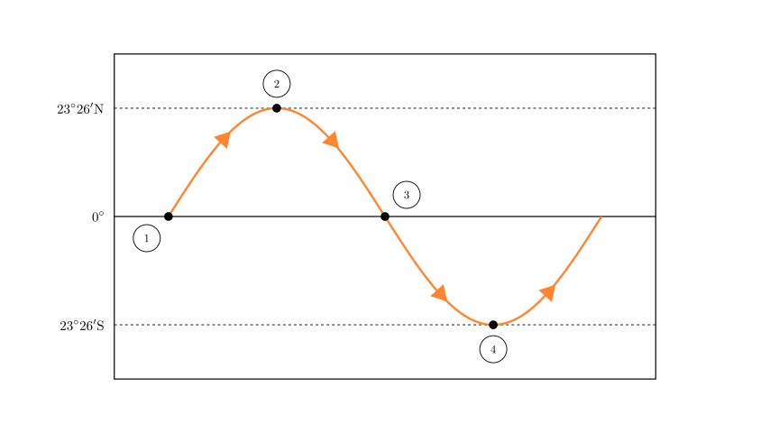
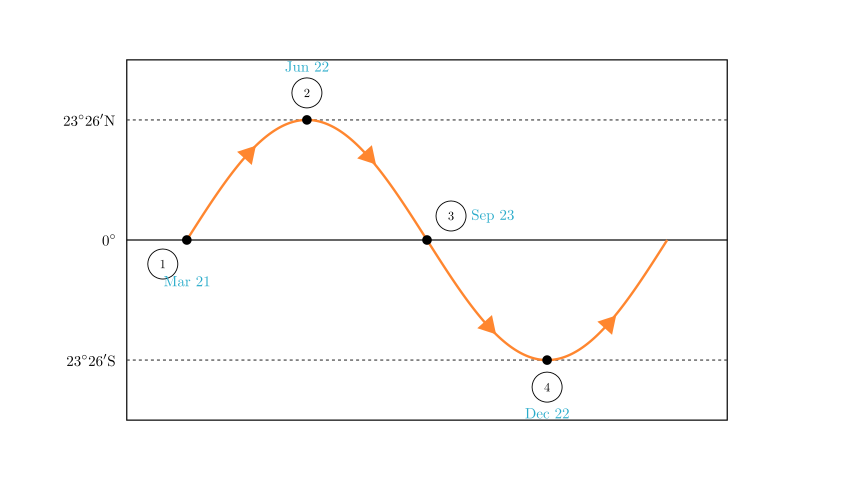
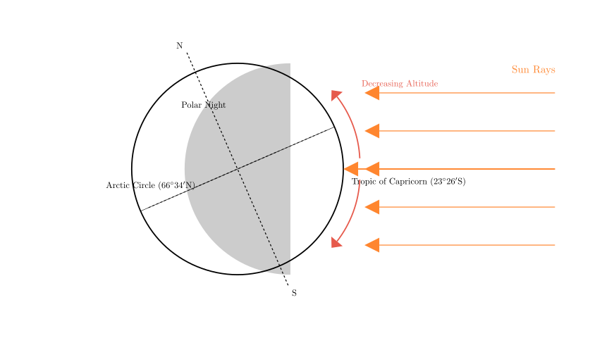

Problem Statement: Read the schematic diagram of the regression movement of the sun's direct point (subsolar point) and complete the following requirements:
(1) Among the four points ①, ②, ③, ④ in the figure, $\underline{\hspace{5em}}$ is the position of the sun's direct point on December 22, and $\underline{\hspace{5em}}$ is the position of the sun's direct point on March 21. (2) Among the four points ①, ②, ③, ④, the earliest sunrise in Baicheng occurs at $\underline{\hspace{5em}}$; the longest day in Baicheng occurs at $\underline{\hspace{5em}}$. (3) On the day of point ④ in the figure, the noon sun altitude decreases from $\underline{\hspace{5em}}$ towards the north and south sides; the range where the noon sun altitude reaches the maximum value in the year is $\underline{\hspace{5em}}$; the range where polar night appears is $\underline{\hspace{5em}}$. (4) On the day of the Summer Solstice, on the schematic diagram of the regression movement of the sun's direct point, the sun shines directly on the $\underline{\hspace{5em}}$ position; after that day, the sun's direct point moves towards the $\underline{\hspace{5em}}$ (direction). (5) Among the four points ①, ②, ③, ④, those representing equal day and night across the globe are $\underline{\hspace{5em}}$.
Solution Approach: This problem involves understanding Earth's revolution around the Sun and how the subsolar point (the latitude where the sun is directly overhead at noon) shifts throughout the year. We will interpret the provided graph, which tracks latitude over time, to identify the Equinoxes and Solstices. Then, we will apply the principles of solar altitude and day length associated with these specific dates.

Step 1: Identifying the Dates (Question 1)
The diagram tracks the latitude of the subsolar point (where the sun is directly overhead) throughout the year. The sun moves between the Tropic of Cancer ($23^{\circ}26'N$) and the Tropic of Capricorn ($23^{\circ}26'S$).
Answer (1): ④; ①

Step 2: Day Length and Sunrise in Baicheng (Question 2)
Baicheng is located in Jilin Province, China, which is in the Northern Hemisphere.
Answer (2): ②; ②
Step 3: Solar Altitude and Polar Night on December 22 (Question 3)
Point ④ represents the Winter Solstice (Dec 22). On this day: * The sun is directly overhead at the Tropic of Capricorn ($23^{\circ}26'S$). * Solar Altitude Distribution: The noon sun altitude is $90^{\circ}$ at the subsolar point. It decreases as you move away from this latitude in both directions (North and South). * Maximum Annual Value: For locations south of the Tropic of Capricorn, the sun never gets closer to them than it is on this day. Thus, the region from the Tropic of Capricorn to the South Pole sees its maximum noon sun height of the year. * Polar Night: Since the sun is far south, the area around the North Pole receives no sunlight. The polar night extends from the Arctic Circle ($66^{\circ}34'N$) to the North Pole ($90^{\circ}N$).

Answer (3): Tropic of Capricorn (or $23^{\circ}26'S$); Tropic of Capricorn and the area south of it; Arctic Circle and the area north of it (or $66^{\circ}34'N \sim 90^{\circ}N$).
Step 4: Summer Solstice Movement (Question 4)
Answer (4): ② (or Tropic of Cancer); South.
Step 5: Global Equal Day and Night (Question 5)
Answer (5): ①, ③
Final Recap: 1. Dec 22: ④; Mar 21: ① 2. Earliest Sunrise: ②; Longest Day: ② 3. Decreases from: Tropic of Capricorn; Max annual altitude: Tropic of Capricorn and south; Polar Night: Arctic Circle and north. 4. Directly at: ② (Tropic of Cancer); Moves: South. 5. Equal Day/Night: ①, ③